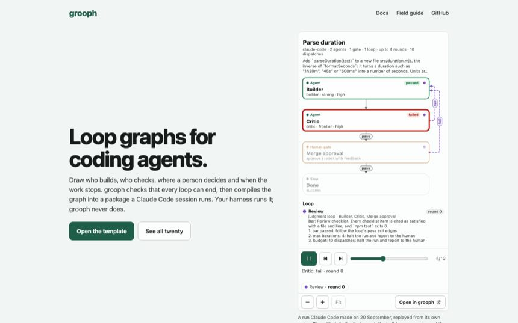
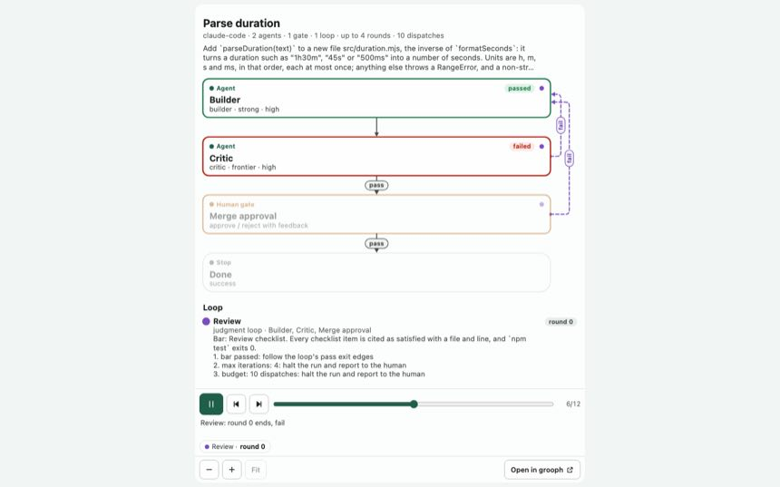
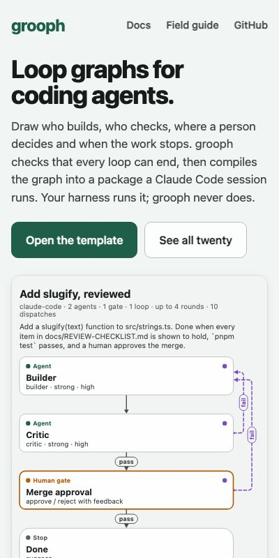
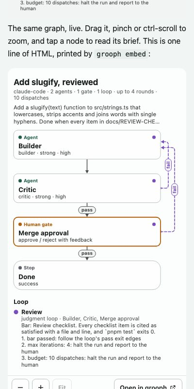
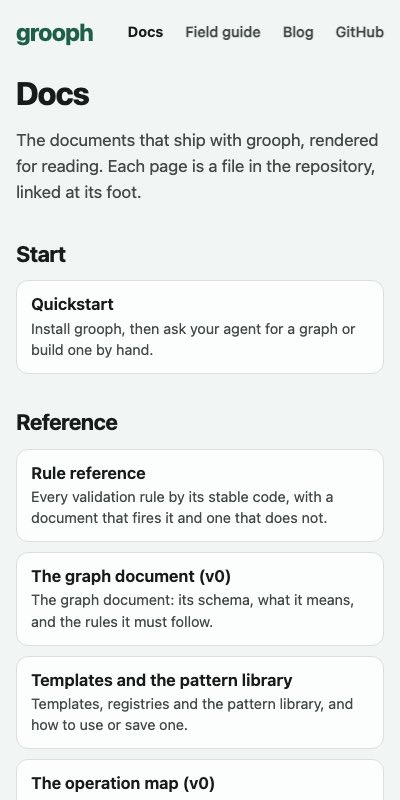

Gate 0022 · 2026-10-04 · version 0.3.0
0.3.0 is merged, tagged and live.
Merged#36, then #37 for the version. CI green on
main after each.Tagged
v0.3.0 on main. #33, #34 and #35 show as merged.LiveThe deploy succeeded. I opened the site and checked it.
Open#38: this page and its pictures. Documents only.
What the live site showed
Checked in Chromium, in the app's browser and with the test driver, against ryanjosephkamp.github.io/grooph.
- The front page opens on a device with no graphs, and "Watch a recorded run" plays the run in the picture's place.
- The documents: all 13 pages answer, and none of their 41 links or pictures within the site is broken.
- Both embeds in the blog draft are live. The graph draws and sizes its frame. The run plays, steps and scrubs.
- A community graph opens in the app from its link on the community page.
- Speed on GitHub Pages itself, five cold visits each on Chrome's throttled links: the front page paints in 1.65 s on slow 4G and 0.50 s on fast 4G; a template's address in 2.15 s and 0.56 s. Pages serves HTTP/2 with gzip, as the local measurements assumed. There is no "before" on the live site to compare with, since the old build is gone; the comparison on gate page 0021 was made locally and stands.






Where to look
- The site: ryanjosephkamp.github.io/grooph. If you see your library instead of the front page, your browser already holds graphs: the front page is at #/about.
- The blog draft: docs/blog/2026-10-loop-graphs.
- The technical report: docs/report/grooph-technical-report.
- The field guide: docs/field-guide. Community: docs/community.
What is left for you
- Set this session's effort to high. You agreed to lower it. The app does not let a session change its own effort, so I could not. HowThe effort picker for this session in the app. It applies from the next turn.
- Read the blog draft on the live site and put it in your own words before you link to it. It is published as a draft, in your name.
RecommendedTell me what to change and I will open a pull request, or edit
docs/blog/2026-10-loop-graphs.mdyourself. - Merge #38? It adds this page's source and pictures to the repository, nothing else. RecommendedYes. "Approved, merge #38" is enough.
- Study two. You agreed to the order: study two first, after Monday's reset. It still needs your go when the time comes, because it spends: about 24 runs and three judgments under a ledger cap of $150. RecommendedAfter 11 a.m. Monday, paste the second prompt below.
- npm. The packages are marked private and the CLI reaches core through the workspace, so
npm publishwould not work today. It needs one small slice first. RecommendedSay "prepare the npm package" when you want it. The publish itself needs your npm account.
Prompts
For the Operator, on your other account
Nothing changes for the lanes. This tells it so, and what is new.
The grooph session has released 0.3.0 (github.com/ryanjosephkamp/grooph, tag v0.3.0). Read docs/HANDBACK-operator.md, section 19. In short: the event hook, the push script and `grooph sessions` did not change, so the lanes have nothing to install and nothing to merge. Keep 0.2.5's hooks as they are. New and possibly useful to you: `grooph embed <file>` prints one line of HTML that shows a graph, a map or a recorded run on any page (a review page, for one); `grooph explain <file>` reads a graph out in plain sentences; the documents are pages now at https://ryanjosephkamp.github.io/grooph/docs/ . Still wanted from you when it happens: a turn longer than ten minutes under 0.2.5 or later (does the lane stay within about ten minutes of now?), and the first lanes that start a session with the hooks already in place. Answer as before: one message I can copy, or files where I can read them. Do not change anything in the grooph repository.
For me, after Monday's reset: study two
Go: run comparison study two (handoffs/0019-comparison-study-two/HANDOFF.md, protocol version 2) with Opus 5.5 and Sonnet 5.5 in place of Opus 5 and Fable 5.1. I confirm the handoff and raise the comparisons ledger cap from $100.00 to $150.00. Local sessions only, no effort above high, never Fable. Record every run before its result is used. Stop and tell me if the ledger passes $140.00 or a run fails for a reason that is not the task. Work on a branch, open a pull request and wait for my word before merging. Touch only the grooph repository. Do not start the Codex compile target. Finish with a gate page like this one.
For me, now: the blog draft
I have read the blog draft on the live site. Change it as follows, in a pull request, and wait for my word before merging: (say what to change: tone, what to cut, what to add, the title)
Checked, and not checked
- Checked: CI green on
mainafter #36 and after #37. The Pages deploy succeeded after each. Core 344, CLI 118 and web 59 unit tests and 160 browser tests at 0.3.0. The live checks listed above. - Not checked: Safari and Firefox. A real phone. The site with a service worker left over from 0.2.5 on a device that has used the app before: it should fetch the new files on the next visit, and I could only check a fresh browser.
- Yours to judge: whether the blog draft sounds like you.
Housekeeping
- Codex's folder is on 0.3.0 and built.
- The five subagent working copies under
.claude/worktrees/are still on the Mac. Their branches are pushed. Say the word and I will remove them. - The three lane folders beside the clone (
grooph-lane-front-door,-embed,-toolkit) are yours to close with their sessions.
How to undo
v0.2.5 and checkpoint/2026-10-04-before-the-push both mark main as it was. Reverting the merge commit of #36 on a branch and merging that would take the site back; nothing was deleted.